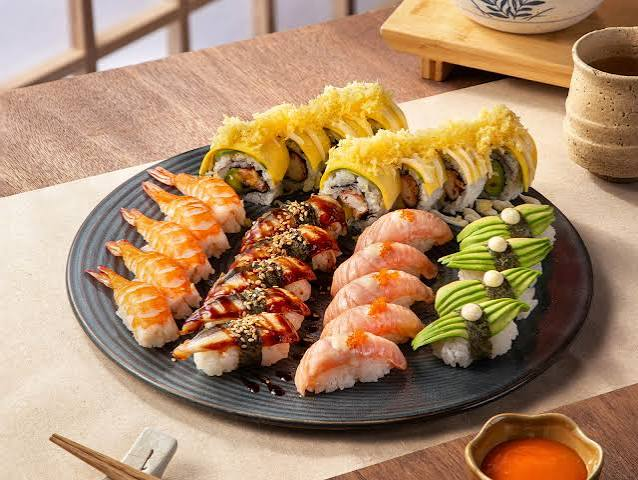
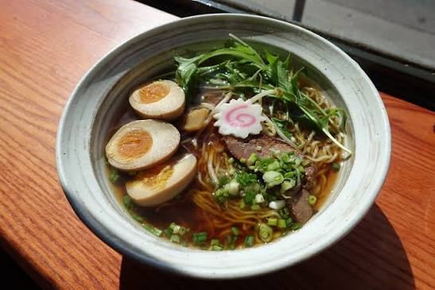
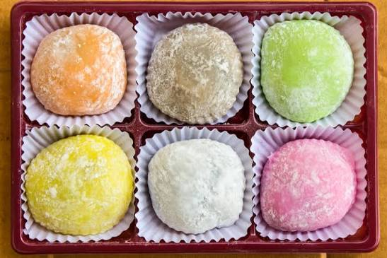
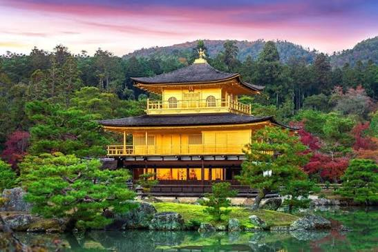
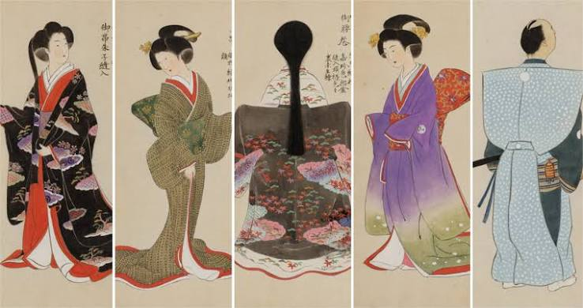
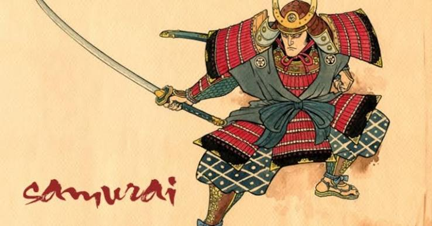
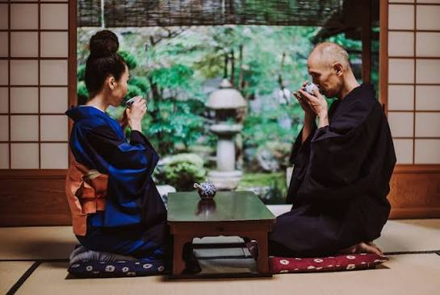

Tinh Hoa Ẩm Thực Nhật Bản (Washoku)

1. Sushi Truyền Thống
Biểu tượng ẩm thực Nhật Bản kết hợp giữa cơm trộn giấm Shari dẻo thơm và các lát hải sản tươi sống Neta được tuyển chọn kỹ lưỡng.
Ấn vào để xem Nguồn gốc, Hương vị & Nghệ thuật nắm Sushi →

2. Mì Ramen Nhật Bản
Món mì nước trứ danh với sợi mì lúa mì dai giòn, nước dùng ninh nhiều giờ đậm đà (Shoyu, Miso, Tonkotsu) ăn kèm thịt xá xíu và trứng lòng đào.
Ấn vào để xem Nguồn gốc, Hương vị & Cách nấu Mì Ramen →

3. Bánh Mochi
Món bánh truyền thống mang ý nghĩa may mắn, trường thọ trong các dịp lễ Tết Nhật Bản với lớp vỏ bột nếp dẻo mịn và nhân đậu đỏ ngọt dịu.
Ấn vào để xem Nguồn gốc, Hương vị & Tục giã Bánh Mochi →
Biểu Tượng Du Lịch Xứ Sở Phù Tang
1. Núi Phú Sĩ (Fuji-san)
Đỉnh núi cao nhất Nhật Bản (3.776m) với chóp nón cân đối phủ tuyết trắng xóa, là nguồn cảm hứng thi ca và hội họa bất tận.
Ấn vào để xem Địa lý, Cảnh sắc Phú Sĩ Ngũ Hồ & Trải nghiệm →
2. Làng Cổ Shirakawa-go
Di sản thế giới tại tỉnh Gifu nổi tiếng với những ngôi nhà mái tranh dốc đứng kiến trúc Gassho-zukuri đẹp như cổ tích giữa mùa tuyết trắng.
Ấn vào để xem Lịch sử ngôi làng, Kiến trúc mái tranh & Lễ hội →

3. Chùa Vàng Kinkaku-ji (Kim Các Tự)
Tuyệt tác kiến trúc Thiền tông tại cố đô Kyoto với hai tầng trên được dát vàng lá rực rỡ soi bóng xuống mặt hồ Kyoko-chi phẳng lặng.
Ấn vào để xem Nguồn gốc lịch sử, Kiến trúc 3 tầng & Cảnh quan →
Lịch Sử Và Văn Hóa Nhật Bản

1. Lịch Sử Thời Kì Heian (Bình An)
Thời kỳ hoàng kim của văn hóa quý tộc cung đình Nhật Bản (794 - 1185) tại kinh đô Heian-kyo (Kyoto), khai sinh chữ viết Kana và tiểu thuyết Truyện Genji.
Ấn vào để xem Bối cảnh lịch sử & Thành tựu văn hóa thời Heian →

2. Văn Hóa Samurai & Võ Sĩ Đạo (Bushido)
Tầng lớp chiến binh tinh nhuệ gắn liền với thanh kiếm Katana và hệ giá trị đạo đức Bushido: Ngay thẳng, Dũng cảm, Nhân từ, Lễ nghĩa và Trung thành.
Ấn vào để xem Nguồn gốc Samurai, Tinh thần Bushido & Ảnh hưởng →

3. Nghệ Thuật Trà Đạo (Chanoyu / Chado)
Nghi thức pha và thưởng thức trà xanh Matcha thấm đẫm tinh thần Thiền tông và mỹ học Wabi-sabi với 4 nguyên tắc: Hòa - Kính - Thanh - Tịch.
Ấn vào để xem Nguồn gốc, Triết lý & Quy trình pha Trà Đạo →